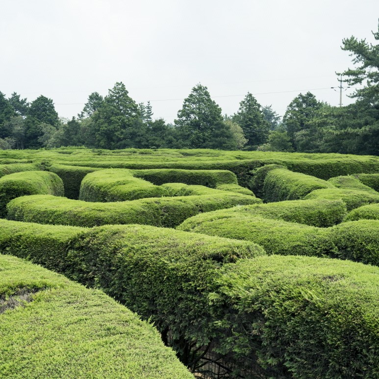
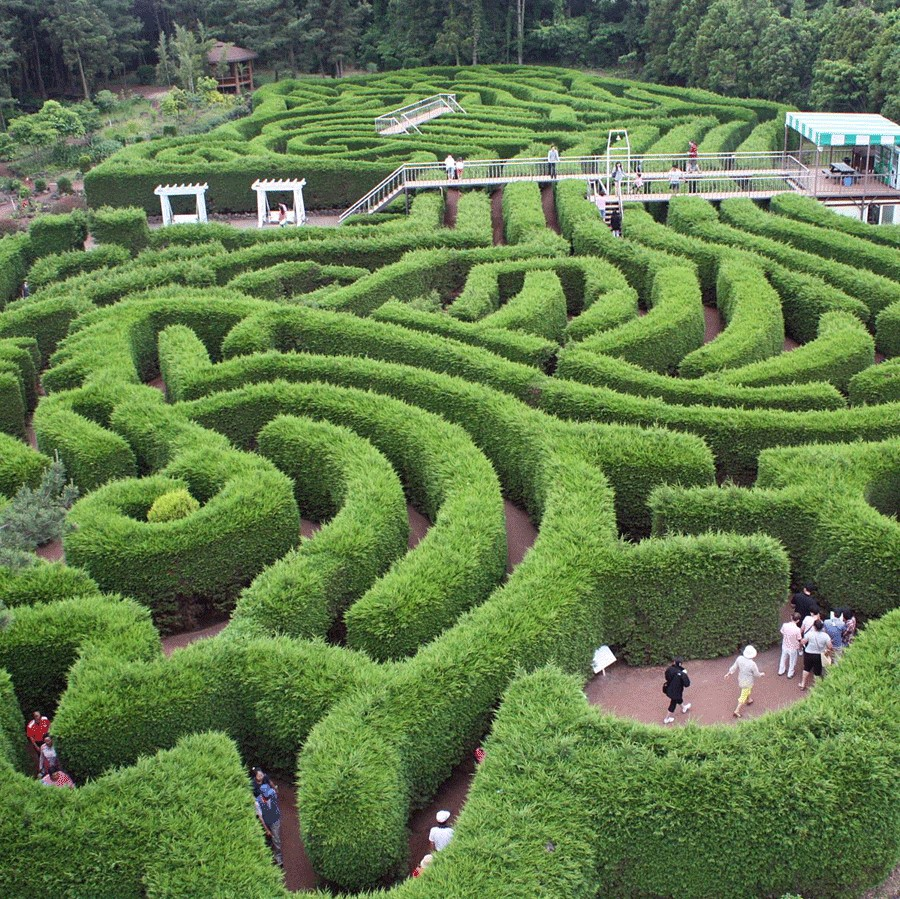
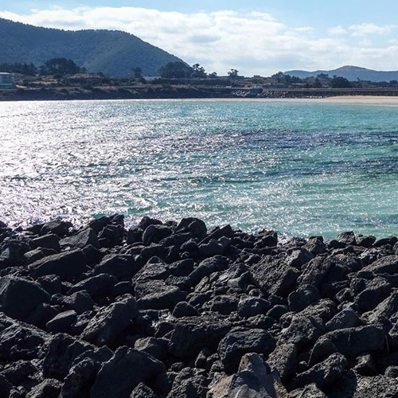
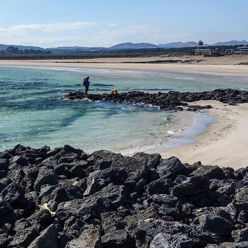
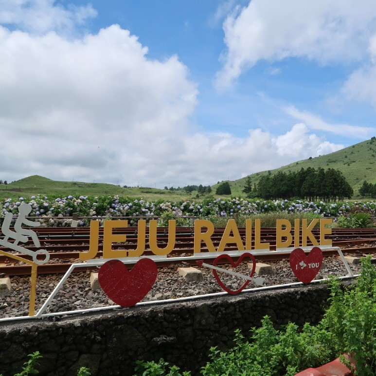
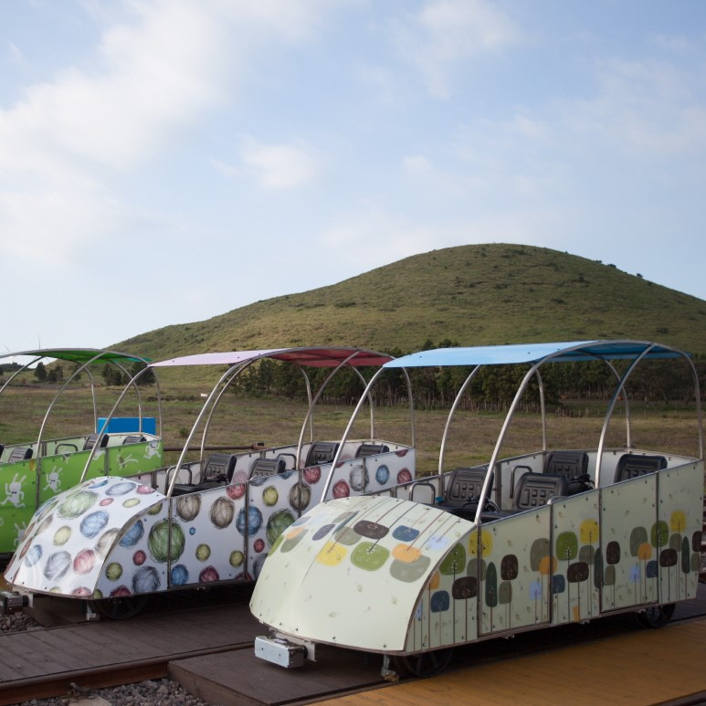
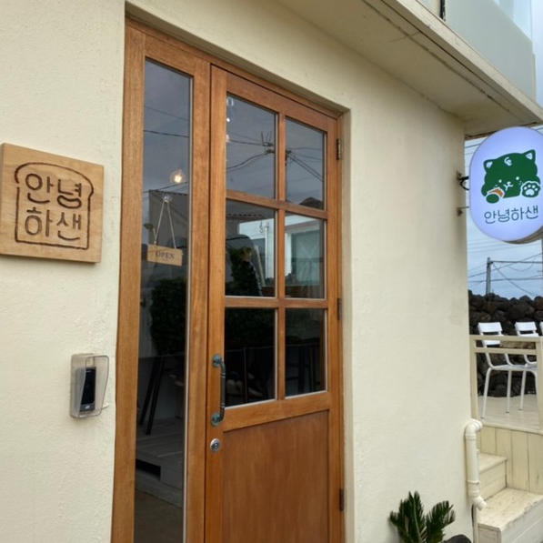
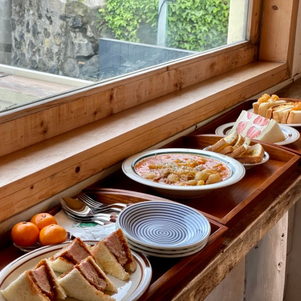

제주의 풍경
제주지도
축제와 행사

구좌읍







김녕미로공원
주소 : 제주시 구좌읍 만장굴길 122
김녕미로공원은 사계절 푸르름을 유지하는 상록수 랠란디가 수벽을 이루고 있는 우리나라 최초의 미로공원이다.
사진 출처
[김녕미로공원] https://www.visitjeju.net/kr/detail/view?contentsid=CONT_000000000500005
[하도해변] https://www.visitjeju.net/kr/detail/view?contentsid=CONT_000000000500677
[레일바이크] https://m.visitjeju.net/kr/detail/view?contentsid=CNTS_000000000020139
[안녕하샌] https://m.blog.naver.com/conomicandle/222311546102